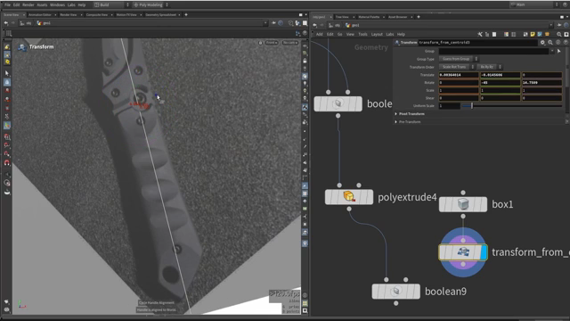
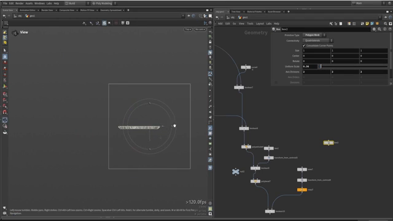

Houdini で斧を作る 4 — ハンドルの稜線とグリップ
出典: Axe modeling || Houdini tutorial （Simon Houdini さん / 1:07:59 / 英語）の 40:50〜52:38 部分。 このページは、上記の動画を見ながら自分用にまとめた日本語の学習メモです。作者公式の翻訳ではありません。 前回はざっくり描いて引き算で揃えるでした。
この記事で扱うこと
斧の柄（ハンドル）とグリップを作ります。
チャプターでいうと Create Handle shape と
Define handle shape and grip（9分の長い節）にあたります。
1. ハンドルの輪郭
作り方は前回とまったく同じです。
また同じことをします。ざっくりカーブを描いて、他の形状で引き算するので、 正確に描く必要はありません。
大まかに描いて周りをぐるっと囲めば、あとは引き算で刃の形に合わせてくれます。 細かい修正は後回しで構いません。
2. 断面に稜線を作る — Cube を45度回して交差させる

参照写真を見ると、ハンドルの断面は真ん中が盛り上がった三角形に近い形をしています。 この稜線を作る方法が面白いところでした。
PolyExtrudeで大きめに押し出しますCubeを1つ置きます。デフォルトのサイズでメッシュより大きいので都合が良いです- Cube を45度回転させ、参照写真の稜線に合わせます
BooleanをIntersectionにして、重なった部分だけを残します
上の画像の Transform パネルで実際の値が見えています。
Rotate が Y に -45、Z に 14.7509。
45度の回転に加えて、ハンドルの傾きに合わせた微調整が入っています。
位置合わせのときは M キーでピボットのモードを切り替えると扱いやすくなります。
動画でも何度も M を押しながら、伸ばしたり回したりしていました。
Intersection の結果を見ながら形を追い込みます。 ここが調整のしどころで、Cube を動かすだけで稜線の位置と角度が変わります。
3. 側面のベベル

参照を見ると、ハンドルの側面はかなり大きく面取りされています。
2キーで点、3キーでエッジのモードに切り替えます- 側面のエッジを選択します
Cキーを押しながら Bevel モードに入ります- ドラッグして面取りの量を決めます
Collision and Limits
ベベルのオプションに Collision and Limits というものがあり、
これを使うとジオメトリの形に応じて、ベベルできる限界を自動的に尊重してくれます。
大きくベベルしたときに他の面を突き抜けてしまう、といった破綻を防げます。 「大きなベベルである必要はなく、あとでスムーズをかければいい」という方針でした。
4. グリップのくぼみ
握る部分の指がかりを作ります。ここも引き算です。
Tubeを置きます。ポリゴン数は多めに（動画では 50）、形は閉じておきます- 90度回転させます
Transform from Centroidを使います。 あとで潰したくなったときに扱いやすいため、とのことでした- ハンドルの中ほどに置いてスケールを詰め、形に沿うよう回転させます
- 潰してから
Booleanの Subtract で引きます
くぼみの深さと形は、スケールと潰し具合で決まります。 動画でも「もう少し小さく」「潰しすぎた」と行き来しながら追い込んでいました。
複数のくぼみを並べるときは、前回と同じく Duplicate が使えます。
5. 端の処理
ハンドルの上端と下端も整えます。
Cubeを端の位置に置きます3キーでエッジモードにして、下側のエッジを選んでベベルします- ベベルの入り方が気に入らなければ、Cube 自体を動かします。
3を押してからVキーでエッジを動かすこともできます - 下端も同様に。ここでも
Transform from Centroidを使っていました
Cube はいろいろな方向に回せるので、狙った形になるまで動かせばいいという発想です。 引き算する側の形を触るだけで結果が変わります。
6. 貫通する穴を忘れずに
ハンドルにも大きな穴が開いています。
2回目で作った穴の形状を、
この Merge にも参照させます。
同じ形を使い回しているので、穴のサイズを変えれば全パーツに一度で反映されます。
最後に Match Size で全体の位置を合わせれば、ハンドルは完成です。
この記事のまとめ
- ハンドルの輪郭もざっくり描いて引き算。同じ手法の反復です
- 断面の稜線は
Cubeを45度回してBooleanのIntersectionで作れます - 実際の回転値は Y に -45度、Z に 14.75度でした
- 位置合わせは
Mキーでピボットモードを切り替えると楽になります - ベベルは
Cキーを押しながら。Collision and Limitsが破綻を防いでくれます - グリップのくぼみは
Tubeを潰して引き算。Duplicateで並べられます - 共通の穴は同じ形状を
Mergeに参照させることで、一度の修正が全体に効きます
次は最終回。ボルトを大量に配置する仕組みと、ハイポリ／ローポリの書き出しです。